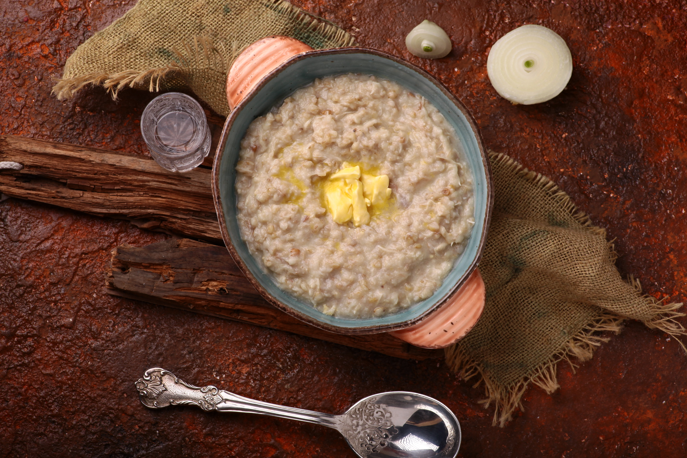

Harisa

Description
A hearty porridge made from slow-cooked wheat and shredded meat, symbolizing resilience and tradition.
Ingredients
- Hulled wheat (or pearled barley)
- Chicken or lamb (bone-in for flavor)
- Water or broth
- Fresh herbs (parsley or cilantro)
- Ground paprika
Steps
- Cook Meat: Boil chicken or lamb in water until tender, then shred the meat and set aside.
- Cook Wheat: Add hulled wheat to the cooking broth; simmer until soft and thickened.
- Combine: Mix shredded meat back into the pot, stirring to create a smooth, porridge-like consistency.
- Season: Add salt, pepper, and optional butter.
- Serve: Garnish as desired and enjoy warm.